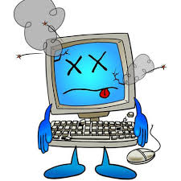

Tips mengatasi komputer yang berjalan lambat
20-Januari-2015 Views : 3,56789 Komputer anda hang? Mungkin memang wajar apabila penggunaan komputer anda sebagai penunjang karja kantor. Namun apabila hang komputer anda setiap hari dan setiap waktu, brarti komputer anda sudah tidak wajar. Perlu anda cek kembali. Yang sangat susah apabila komputer anda merupakan komputer langganan yang sering hang. Komputer hang sediri dapat memberikan efek yang buruk terhadap anda. seperti enggan memakai komputer, pekerjaan terbengkalai dan masalah lainnya.
Pada kesempatan kali ini akan memberikan tips kepada anda mengatasi komputer yang hang dengan mudah. Berikut solusi yang dapat anda jalankan untuk mengatas komputer yang hang:
Bersihkan virus pada komputer. Virus merupakan salah satu peyebab komputer manjadi hang karena tanpa diketahui virus akan menggunakan resource dari komputer anda. Untuk mengatasinya, anda harus menggunakan Anti virus dengan database dan engine terbaru yang disediakan oleh pihak anti virus. Anti virus yang direkomendasikan (Menurut saya sendiri) adalah Avira, Avast atau Kasrpersky.
Bila Operating System (OS) anda mengalami kerusakan atau bermasalah, maka disarankan untuk install ulang komputer anda. Namun install ulang merupakan langkah terakhir yang dapat anda tempuh. Jika anda belum tahu bagaimana cara install ulang komputer, alangkah lebih baik kalau anda menggunakan jasa service dan install komputer di daerah anda.
RAM bermasalah. Untuk RAM sendiri permasalahan yang sering muncul andalah kurang nya dijaga komputer. Socket yang ada dalam CPU silakan anda bersihkan dengan bersih. Memori ini termasuk paling sensitive. Untuk membersihkan RAM, anda bisa menggunakan penghapus pensil yang di gosok-gosokkan ke socket/kaki memory sehingga aliran dan data yang keluar masuk dari RAM bsia mengalir dengan baik.
Harddisk rusak atau terlalu tua. Harddisk tua atau rusak biasanya memiliki kelemahan yang biasanya dirasakan pemilik komputer tua. Jika keadaannya memang sudah memprihatinkan, alangkah lebih baik kalau anda membeli hardisk baru untuk menggantikan hardisk anda yang tentunya akan memberikan peningkatan yang signifikan pada kecepatan dari komputer anda.
Bersihhkan CPU dari debu yang terlewat batas. Apabila banyak debu di alam komputer anda, maka akan menyebabkan komputer jadi berjalan lambat yang tentunya akan meghambat pekerjaan anda.
Jika komputer sudah tidak sering hang, maka pekerjaan anda bisa segera anda selesaikan sehingga membuat anda merasa nyaman dan tidak dikejar-kejar tanggung jawab yang dikarenakan pekerjaan yang belum selesai karena komputer hang.


{kind=link}